2. Some theory around DEM (Discrete Element Methods)¶
2.1. Preamble¶
Many solid materials and structures are made of components in interaction:
Dry granular material (divided media):
component: grain, cluster of grain, piece of grain, coarse grain,etc.
interaction: unilateral contact, elasticity or/and cohesion, friction, etc.
masonry structures (divided structure):

component: brick, stone, mortar, mortar grain.
interaction: unilateral contact, friction, cohesion, etc.
Solid grains in a solid matrix (composites, etc) and/or in a fluid matrix (colloids, concrete, etc)
Changing the scale a continuous media may become discontinuous:
component: metal grain, crystal in a poly-crystal, molecules, atoms;
interaction: grain bond, defects, Wan der Waals effects, Lenhard-Jones potentials, atomic bonds, etc.
{kind=link}
{kind=link}
{kind=link}
{kind=link}
{kind=link}
{kind=link}
{kind=link}
Considering divided media, it exists various space scales :
microscopic
mesoscopic
macroscopic
Behavior depends on:
composition: shape (angularity, elongation, etc), dispersity
state: dense-loose, confining pressure, dry-wet-composite
load: static-dynamic
Depending on the solicitation it may behave like: a solid, a liquid or a gas
It exists numerous methods to model these kind of media and structures.
At the macroscopic scale the divided media is considered as continuous. It is possible to use various discretization:
classical methods (Finite Difference, Finite Element Method, Finite Volume Method, etc)
dedicated methods (Thin Layer Model, Spreading-based model, etc)
it needs an ad-hoc rheological model to represent the complex behavior of the media (elasticity, plasticity, visco-plasticity with threshold, fracture, etc).
Drawbacks: building a model with the relevant phenomenological parameters and identifying the parameters.
At the microscopic or mesoscopic scale, methods rely on a modeling of:
the behavior of each component
the behavior of the interactions of each component with its neighborhood
A lot of methods aim to model divided media (and/or structures) at the component and interaction scale: Cellular Automata, SPH, Lattice Element methods, Discontinuous Deformation Analysis (DDA), etc and Discrete Element Methods (DEM).
Advantages: simpler model, less parameters, easier to identify.
Drawback: computational cost.
One can also consider DEMs to model fictitious divided media as in: coarse grain approach domain decomposition approach. These methods may also be used for modeling mechanism or robotics DEMs can be mixed with continuous methods to model, for example, the transition between a continuous and a divided media: fragmentation of a media, wear, powder compaction to obtain ceramics
2.2. Modeling¶
2.2.1. Smooth Dynamic¶
2.2.1.1. Equations of motion¶
Assuming a smooth evolution of the system allows to describe the motion of each mechanical component by a semi-discretized in space system:
(1)¶
where:
: represents the vector of generalized degrees of freedom,
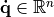: the generalized velocities,
: the contact forces,
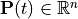: the external forces,
: the internal force (deformable bodies) and the nonlinear inertia terms (centrifugal and gyroscopic),
: the inertia matrix.
Initial and boundary conditions must be added to fully describe the evolution of the system.
Considering a rigid component, a more suitable dynamical equation may be used introducing the v and ω, the translation and rotation velocities of the center of mass.
The Eq. ((1)) is replaced by the well-known Newton-Euler system of equations:
where:
and represent respectively the resultant of external and contact forces,
and represent respectively the momentum due to external and contact forces,
and represents respectively the mass and the inertia matrices.
Note that for 2D or 3D components with geometric isotropy, the vector is equal to zero.
The choice of angle parameters is very important, especially in 3D (inertia frame mapping, Euler angles, quaternion, etc.)
2.2.1.2. Interaction description¶
At any time of the evolution of the system one needs to define the interaction locus and an associated local frame in order to describe the interaction behavior.
{kind=link}
It is assumed that one is able to define for each point (C) of the candidate boundary its (unique) nearest point (A) on the antagonist boundary. It allows to define for each couple of points a local frame with the normal vector of the antagonist boundary and : two vectors of its tangential plane.
Only in simplest cases (rigid body with strictly convex boundary) the interaction locus may be considered as punctual.
Less trivial in usual cases:
{kind=link}
Strictly convex, i.e. cubes, bricks, etc.
Locally convex, i.e. general polyhedron, triangulated surface
Not convex at all but … It may be decomposed in not strictly convex shapes.
In these cases many choices:
punctual contact with extended law (transmission of torque)
-> how to define the normal ? The interaction law depends on the objects shape ! etc.
multi-punctual contacts with classical interaction laws
-> how many contact points ? normal choice ? It mays introduce local indetermination of contact forces, etc.
continuous surfaced description as in mortar methods
-> needs to perform integration on non-conforming triangulation, etc.
etc.
Implicitly DEMs rely on the following hypotheses :
the deformation concerns only the contact point neighborhood
-> components of the system may be considered as rigid;
the contact area is small behind the size of the component;
locus of interaction may be supposed as punctual;
interactions are binary (no effect of connected interaction by particle on their behavior);
-> interaction law depends only on related component;
At least, for every potential contact alpha, it will be determined:
Contact point coordinates;
The local frame ;
The gap , i.e. the algebraic distance between two bodies;
The contact relative velocity between the two bodies .
Contact description is a key point of DEMs.
2.2.1.3. Local-Global mapping¶
Two sets of unknowns:
global unknowns (or kinematic space unknowns) related to the bodies: center of inertia or mesh node displacement and velocity (), resulting force and momentum (), etc.
local unknowns (or contact space unknowns) related to interactions: gap (
 ), relative velocities (), forces (
), relative velocities (), forces ( ), etc.
), etc.
Related by kinematic relations:
Lets consider two rigid bodies. The mapping between inertia center and contact point velocities will be write as follow:
where represents the vector between the inertia center and the contact point .
Then it is possible to write the relative velocity between the two points (i bodies) and (j bodies):
which can be written in a matricial way:
And expressed in a local frame as:
More generally, using kinematic relations, one can write for a given contact  :
:
Using duality consideration (equality of power expressed in terms of global or local unknowns), the local contact force may be mapped on the global unknowns:

where is the transpose of .
In the following, operators mapping all the local and global unknowns are introduced:
Remark: even if and have good theoretical properties (surjectivity and injectivity),
it is not necessary the case for  and
and  . Loose of these properties is due to the introduction of kinematic relation between contacts.
. Loose of these properties is due to the introduction of kinematic relation between contacts.
2.2.1.4. Interaction law¶
In DEMs, a large part of the physics of the problem is described through interaction laws. Two ways of thinking:
Interaction behavior is a coarse representation of what happens at the boundary scale: impenetrability, plastic deformation of asperities, capillarity effects, friction, wear, etc.
Interaction behavior is a fine representation of what happens both at the bulk and boundary scale: idem as 1 + bulk behavior, etc.
The two ways have different space scales which imply different time scales. When considering rigid bulk behavior, one is able to describe:
Rigid body motion * Large time scale; * Recover plastic behavior of the media.
Motion due to wave propagation * Fine time scale * Recover elastic and plastic behavior of the media. No indeterminacy.
From a mathematical point of view:
Set valued function, defined by an implicit law :
Function, defined by an explicit law :

Case of explicit laws:
First let’s considered the normal part, denoted .Several models are available:
Hertz law:
Hook law with viscous damping:
JKR cohesion law [Johnson.Kendall.ea1971]: 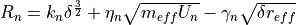.
where is the contact stiffness,  viscosity coefficient and contact cohesion.
represents the relative velocity between particles and is defined as
a center-center vector, and
viscosity coefficient and contact cohesion.
represents the relative velocity between particles and is defined as
a center-center vector, and  represent respectively the effective mass and radius associated
to the contact.
represent respectively the effective mass and radius associated
to the contact.
For Hertz law . Behavior parameter are “structure” dependant (i.e. geometry).
For a given pressure  , the stiffness level may be characterized by:
, the stiffness level may be characterized by:
(Hertz)
(Hook)
So the elastic deflection
Remarks:
Rigid grains if , a “Good” value are 10000;
Quasi-static problem: 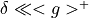 ( interstice between grains);
Flow problem: (
 duration of contact).
duration of contact).
Considering the oscillator made by two particles in contact (Hook law):
Critical damping and
Pulsation and contact duration 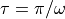
Restitution coefficient
Remarks:
For Hertz law, same results with a varying
Secondly let’s considered the tangential part of the interaction law:
Viscous law with Coulomb threshold: 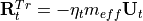 if then
 else
else Incremental elastic law with Coulomb threshold:
a previous
 is known, and
is known, and if then
else
with .
Remarks:
Compute as before by taking and replacing by
Difficult to give a physical meaning to
and
Explicit laws allow to substitute the displacement (or the velocity) to the force in the dynamical equation. If considering a simplified problem described by the Newton equation:
using , , and one can write:
which is a “classical” non linear problem only written in term of kinematic unknowns. The kinematic unknowns of each component are dependent due to the interactions.
Case of implicit laws
Frictional contact: Signorini-Coulomb
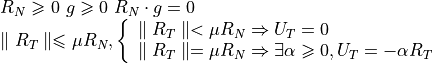
{kind=link}
{kind=link}
Remark:
For dynamical problems, it is more natural to formulate the unilateral contact in term of velocities
It’s not possible to substitute reaction by kinematic unknowns, the problem remains implicit. One can consider explicit law (smooth) as a regularization of implicit law (non smooth). In this case the parameters are not due to physical considerations but numerical ones.
An explicit law may be written as an implicit law.
Example:
Lets consider the basic example of a single ball bouncing on a plan:

{kind=link}
Question: Is the usual formalism adapted to describe a dynamical system with unilateral contact?
So let try to solve the (simplified) problem:
Using an implicit Euler scheme, one obtains the following system:
Thus the solution is:
So if then
Two solutions are possible:
Using smooth interaction law as before but needs reasonably small time steps
Adapting the formalism to face the problem
Introducing a deformable body will not solve the problem.
2.2.2. Non Smooth Dynamic¶
2.2.2.1. Equations of motion¶
The differential system must be modified to describe collisions and other non smooth phenomena.
The “spirit” of the approach is to consider a weaken form of the dynamical system, e.g. balance of momentum:
where the impulse will contain both the sum of:
the contribution of smooth load over the time interval (
 ),
),the percussion, denoted , at shock time (supposed instantaneous).
To describe one uses the local bounded variation framework over all sub-intervals of , i.e. and one introduces differential measures allowing the generalization of the equation of motion to non smooth phenomena ([Moreau1988]).
Remark: Event driven approaches will consider smooth motion, but will re-initialize velocity (acceleration, etc.) at each non smooth event using shock law. Only reasonable to compute a granular gas or a loose flow of granular material.
More precisely the classical equation of motion is reformulated in terms of a differential measure equation:
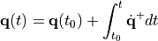
In the previous equation, is the differential measure of
(atomistic at the discontinuity and on the continuous part), is the
Lebesgue measure on  while is the differential measure of contact forces.
while is the differential measure of contact forces.
The measure contains:
The contribution of smooth contact (diffuse contribution ):
The contribution of local impulsion densities exerted by shocks (atomic contributions),
2.2.2.2. Interaction law¶
Local - global mapping:
Frictional contact:
Coulomb friction (threshold law):
Shock law:
When shocks occur in a rigid body collection, the equation of motion and the interaction law are not sufficient to describe properly all the physics of the problem.
It must take into account:
Local phenomena as inelastic behavior of materials at the interface depending on both the contact geometry and the material behavior.
Global phenomena as the wave propagation in the body bulk, body geometry dependency and boundary conditions.
More complex effects: long distance effects due to simultaneous impact
In the case of binary shocks, three kind of restitution can be used:
Newton restitution, which relates the velocity after () to the velocity before () impact
Poisson restitution, which relates restitution impulsion () to the compression impulsion () according to the decomposition of the shocks in a compression and restitution phase:
Energy or Stronge restitution, which relates restitution energy to compression energy:
Several remarks could be done:
Impact law for the normal component is well understood, it is not the case of the tangential component.
The choice of the restitution coefficient is a difficult task for complex structures [Stoianovici.Hurmuzlu1996].
In the case of dense granular material, the effect of impacts may be neglected and previous laws can be used.
Binary impact law are not sufficient to model phenomena such as Newton cradle (multiple impacts). One can refer to [Acary.Brogliato2003] for more details about the construction of a restitution law.
2.2.3. Conclusion¶
Various modeling choices are possible for DEM depending on:
space scale: interaction -> smooth, component -> non-smooth
time scale: waves -> smooth, rigid body motion with impact -> non-smooth
the shape of the components -> non-smooth easier but introduce indetermination.
etc.
2.3. Numerical Strategies¶
2.3.1. Introduction¶
Depending on modeling choices numerical strategies are build to solve the evolution problem. They depend on:
time evolution strategy: alert{time stepping} or event driven
time integrator over a time step: explicit or implicit
implicit contact solver if necessary (Lemke, Gauss-Seidel, bi-potential, etc.)
technical aspects: contact detection, rotation integration, etc.
etc.
Over a time step [t,t+h[, three important tasks can be underlined:
{kind=link}
The contact detection
The computation of contact forces, called contact problem
The motion of the different element of the media.
Pioneer DEMs such as Cundall et al. [Cundall.Strack1979] or Allen et al. [Allen.Tildesley1987] consider explicit interaction model (smooth) and use explicit time integration scheme. This kind of methods refer to smooth-DEM.
The so-called Granular Element Method, proposed by Kishino [Kishino1988] consider also an explicit model for contact but is based on an implicit time integrator. The solving method is similar to the penalization techniques used in Finite Element Method.
In a different way, Moreau developed the Contact Dynamics method [Moreau1988] for implicit non smooth interaction model. It uses an implicit time integrator. It needs a dedicated contact solver. Further works lead to the extension of the method to multi-contact simulations of collections of deformable bodies [Jean1999] and the method becomes the so-called Non Smooth Contact Dynamics method (NSCD). This kind of methods refer to NSCD.
Carpenter et al. [Carpenter.Taylor.ea1991] proposed a method to solve implicit interaction model using explicit time integrator.
Thus the end-user has various possibilities to perform numerical modeling.
2.3.2. Smooth-DEM¶
2.3.2.1. Generality¶
Using explicit interaction law leads to solve:
with , and , .
Using an implicit time integrator, a non-linear solver (Newton-Raphson) will be necessary. Assuming linear contact laws and fixed contact network it may be solved directly (see GEM of Kishino).
Using an explicit time integrator leads to an uncoupled set of equations:
Different explicit time integrator can be used to integrate the motion of particle:
Gear integrator for Molecular Dynamics [Allen.Tildesley1987]
Velocity verlet
Time-centered scheme for the Distinct Element Method (Cundall) [Cundall1971]
2.3.2.2. Time integrator¶
Predictor-corrector Gear integrator
Prediction: Using classical Taylor expansion ( and are first and second time derivative of acceleration):
![\left\{
\begin{array}{ll}
\mathbf{q}^p(t+h) & = \mathbf{q}(t) + h\dot{\mathbf{q}(t)} + \frac{h^2}{2!} \ddot{\mathbf{q}}(t) + \frac{h^3}{3!} \mathbf{b}(t) + \frac{h^4}{4!} \mathbf{c}(t) + \ldots \\
\dot{\mathbf{q}}^p(t+h) & = \dot{\mathbf{q}}(t) + h \ddot{\mathbf{q}}(t) + \frac{h^2}{2!} \mathbf{b}(t) + \frac{h^3}{3!} \mathbf{c}(t) + \ldots \\
\ddot{\mathbf{q}}^p(t+h) & = \ddot{\mathbf{q}}(t) + h \mathbf{b}(t) + \frac{h^2}{2!} \mathbf{c}(t) \ldots \\
\mathbf{b}^p(t+h) & = \mathbf{b}(t) + h \mathbf{c}(t) + \ldots \\
\mathbf{c}^p(t+h) & = \mathbf{c}(t) + \ldots
\end{array}
\right.](_images/math/9445b74c9c92db3e9c1a1bec6be4321e460c47a9.png)
Perform detection in the predicted configuration, compute contact forces, compute the acceleration
Correction: considering perform the correction

The correction step may be repeated.
Velocity Verlet scheme
Its also predictor-corrector approach.
Prediction:
Perform detection in the predicted configuration, compute contact forces, compute the acceleration knowing: and ().
Correction:
Note that the classical Verlet scheme (leap-frog) is not usable for DEM.
Time-centered scheme
Knowing and one perform contact detection, computes contact forces and update acceleration .
Then one updates:
It is not written as a predictor-corrector scheme. But it’s the same as velocity verlet.
2.3.2.3. Contact laws¶
They are computed in the predicted configuration.
2.3.2.4. Practical aspects¶
Some cares must be taken to obtain numerical results that keep a mechanical sense:
The time step $h$ depends explicitly on the mechanical parameters of the system () and must be small enough to ensure numerical stability and describe with accuracy the contact.
Dissipation must be added to stabilize the problem (i.e. over-shoots).
For example non viscous dissipation can be added to study granular flow:
is chosen depending on the studied problem:
0.7 for quasi-static problem
less for dynamic problem
and 0.1 for wave propagation
Thus control parameter of the simulation are:
the time step discretization (
 ),
),the local stiffness (normal and tangential ),
the viscous (
 ) or non viscous () dissipation.
) or non viscous () dissipation.
Evaluation criteria related to the computation quality:
Respect of interaction law,
Control of numerical damping.
2.3.3. Non Smooth Contact Dynamics¶
2.3.3.1. Time stepping¶
Time integration of the equation of motion leads to:

where:
represents the value of the total impulsion over the time step alert{the unknown in the following}
the integral of applied forces over the time step;
A  -method (Crank-Nicholson) is used to evaluate
and 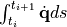 :
-method (Crank-Nicholson) is used to evaluate
and 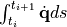 :
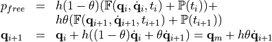
with .
If the scheme is implicit and stable unconditionally.
If the scheme is conservative for smooth evolution problem,
If the scheme is explicit [Carpenter.Taylor.ea1991]
The order of the time integrator is weak (1 or 2). The time discretization is imposed arbitrarily. Its mainly driven by the precision of the contact treatment. If discontinuities occur they are treated simultaneously. No limitation on the number of interactions but the time order is lost.
If now we use this formulation for the previous elementary contact problem, one obtains:
The implicit euler scheme gives:
The obtained solution is independent of the time step.
If then and and .
The error made on the gap decreases with the size of the time step.
2.3.3.2. Managing interactions¶
The two mappings and depend on the solution.
They may be evaluated in a ‘mean’ configuration:
If the time step is small enough (small sliding motions, etc) and the curvature of component shapes is small,
the mapping and can be considered as constant on a whole time interval.
Remarks:
Usually the contact problem is solved in a pseudo-explicit configuration:
 .
.The pseudo configuration of the next time step will be determined by the final velocity : . This is a Leap-Frog technique.
2.3.3.3. Contact problem formulation¶
The problem to solve is written in terms of:
discretized equations of motion for each body expressed with global unknowns :
interaction laws expressed with local unknowns (contact
):
mappings (
and ) to pass from local to global unknowns

Using basic algebraic transformations the equations of motion may be expressed in terms of local unknowns
where and .
Iteration matrix computation ()
Time loop:
Halt criteria
2.3.3.4. Contact Solvers¶
The classical NSCD approach rely on a Non Linear Gauss Seidel (NLGS) algorithm. Considering one by one the contacts (alpha) of the local systems to solve:
Freezing the contributions of other contact to:
updated values of if
old values of if .
We solve the alpha local problem of 2 unknowns with 2 equations and we repeat the process until convergence
Local solvers:
2D :
explicit uncoupled resolution if is diagonal
coupled graph intersection ( )
![\begin{array}{lcl}
If \ b_N \geq 0 & then & \mathbb{P} = 0 \\
& & status: no \ contact \\
Else & & \\
\mbox{\hspace{2ex}} compute & \epsilon=-1,1 & Dft_{\epsilon}=W_{TN}+\epsilon \mu W_{TT} \\
& & Dfn_{\epsilon}=W_{NN}+\epsilon \mu W_{NT} \\
\mbox{\hspace{2ex}} If \epsilon(Dft_{\epsilon}b_N - Dfn_{\epsilon}b_T) \geq 0 & then & P_n = -b_N/Dfn_{\epsilon}, P_t=\epsilon \mu P_N \\
& & status: sliding (\epsilon) \\
\mbox{\hspace{2ex}} Else & & \mathbb{P} = \mathbb{W}^{-1}b \\
& & status: sticking \\
\end{array}](_images/math/788653740247df7a0f215d9685bdb980da7c8e19.png)
pseudo-potential approach (bi-potential)
LCP solver
etc.
3D:
explicit resolution if is diagonal (3D)
Generalized Newton algorithm (3D)
pseudo-potential approach (2D)
LCP solver
etc
Various implementation of NLGS are possible:
Store Delassus Loop strategy (SDL):
Evaluating all the matrices 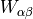
![\left[
\begin{array}{l}
k=k+1 \mbox{ (NLGS iteration)}\\
\left[
\begin{array}{l}
\alpha = \alpha+1 \mbox{ (Contact index)}\\
\mbox{(a) Evaluating the right-hand side} \\
\mbox{\hspace{3ex}}\mathbf{U}_{\alpha,loc} = \mathbf{U}_{\alpha,free} + \sum_{\beta < \alpha} \mathbb{W}_{\alpha \beta} \mathbb{P}^{k+1}_{\beta}
+ \sum_{\beta > \alpha} \mathbb{W}_{\alpha \beta} \mathbb{P}^{k}_{\beta} \\
\mbox{(b) Solving the local problem} \\
\end{array}
\right . \\
\mbox{Convergence test for } k=0 \ldots k_{max}\\
\end{array}
\right .](_images/math/05ca8c44b2111529294bc03c44d68b9fafbcc4dd.png)
Rigid: efficient in 2D not in 3D
Deformable: efficient in 2D
Exchange Local Global Strategy (ELG):
Evaluating the matrix
![\left[
\begin{array}{l}
k=k+1 \mbox{ (NLGS iteration)}\\
\left[
\begin{array}{l}
\alpha = \alpha+1 \mbox{ (Contact index)}\\
\mbox{(i) Identifying the contact bodies} (\alpha = jl) \\
\mbox{\hspace{3ex}Computing an auxiliary value} \\
\mbox{\hspace{3ex}}\mathbf{U}_{\alpha,aux} = \mathbb{H}^{\star}_{\alpha} (\mathbb{M}_j^{-1} r^k_{j} - \mathbb{M}_l^{-1} r^k_{l}) \\
\mbox{(a) Evaluating the right-hand side} \\
\mbox{\hspace{3ex}}\mathbf{U}_{\alpha,loc} = \mathbf{U}_{\alpha,free} + \mathbf{U}_{\alpha,aux} - \mathbb{W}_{\alpha \alpha} \mathbb{P}^{k}_{\alpha} \\
\mbox{(b) Solving the local problem} \\
\mbox{(i) Updating the resultant on bodies} (\alpha = jl) \\
\mbox{\hspace{3ex}}
\left[ \begin{array}{c} r_j \\ r_l \end{array} \right]^{k+1} =
\left[ \begin{array}{c} r_j \\ r_l \end{array} \right]^{k} +
\mathbb{H}_{\alpha} ( \mathbb{P}^{k+1}_{\alpha} - \mathbb{P}^{k}_{\alpha}) \\
\end{array}
\right . \\
\mbox{Convergence test for } k=0 \ldots k_{max}\\
\end{array}
\right .](_images/math/b431a7b4e569e887baab0faf787641805900f0f4.png)
A parallel treatment of the NLGS is possible
Store Delassus Loop strategy (SDL):
Evaluating all the matrices
![\left[
\begin{array}{l}
k=k+1 \mbox{ (NLGS iteration)}\\
\mbox{\bf{!\$OMP PARALLEL PRIVATE (...) SHARED (...) ...}} \\
\mbox{\bf{!\$OMP DO ...}} \\
\left[
\begin{array}{l}
\alpha = \alpha+1 \mbox{ (Contact index)}\\
\mbox{(a) Evaluating the right-hand side} \\
\mbox{\hspace{3ex}}\mathbf{U}_{\alpha,loc} = \mathbf{U}_{\alpha,free} + \sum_{\beta < \alpha} \mathbb{W}_{\alpha \beta} \mathbb{P}^{k+1}_{\beta} + \sum_{\beta > \alpha} \mathbb{W}_{\alpha \beta} \mathbb{P}^{k}_{\beta} \\
\mbox{(b) Solving the local problem} \\
\end{array}
\right . \\
\mbox{\bf{!\$OMP ENDDO}} \\
\mbox{\bf{!\$OMP END PARALLEL}} \\
\mbox{Convergence test for } k=0 \ldots k_{max}\\
\end{array}
\right .](_images/math/7bc26eb6bddb6c359d3f3281a585a43e50b02bd0.png)
Needs equivalent parallel treatment of other CPU consuming parts of the code.
Quasi NLGS may be derived, rewriting the system:
where is the impulsion computed at the previous Gauss-Seidel iteration.
Noting that when the algorithm goes close to the solution, one may derive a quasi NLGS replacing the original by an arbitrary one.
Various alternatives are possible for the contact solver:
Conjugate Projected Gradient Algorithm [Renouf.Alart2004]
Lemke (for small collection of rigid bodies)
Other possibilities, see Siconos NSSPack
2.3.3.5. Practical aspects¶
Numerical model parameters are:
The value
The time step
The convergence norm of the Gauss-Seidel algorithm
The direction of reading the contact set
Quality of the computation lays on:
The respect of interaction laws
The number of iteration performed
The free evolution of bodies
Bibliography
- Acary.Brogliato2003
- Carpenter.Taylor.ea1991(1,2)
- Johnson.Kendall.ea1971
- Moreau1988(1,2)
- Renouf.Alart2004
- Stoianovici.Hurmuzlu1996